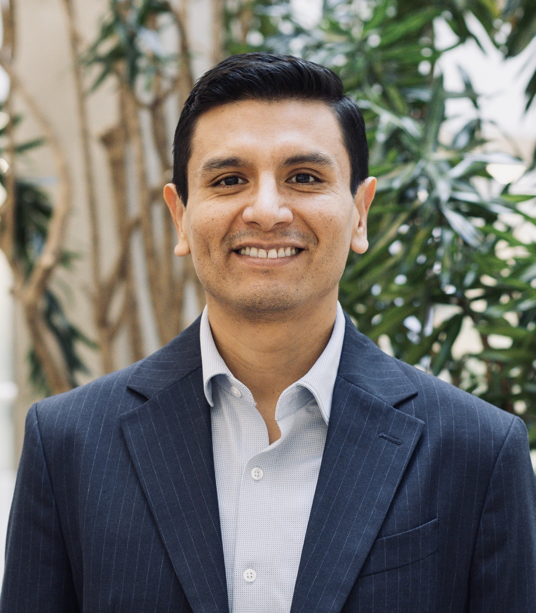

Pepe Cordero
Líder Fundador
Mensaje personal
Carta del Fundador
Queridos peruanos,
Mi nombre es Pepe Cordero. Soy esposo, padre de dos hijas, profesional peruano y, como millones de ustedes, alguien que sueña con un mejor futuro para nuestro país.
Nací y crecí en una familia de clase media trabajadora. Como muchas familias peruanas, aprendimos desde pequeños el valor del esfuerzo, del trabajo honesto y de salir adelante con sacrificio…
Nuestra Historia
Un ejecutivo que volvió
para transformar su país
La madre de Pepe Cordero fue enfermera en el Hospital del Niño de Lima. Desde pequeño, él vio llegar a niños de todo el Perú —muchos de Chulucanas, la tierra de su madre— con enfermedades prevenibles y sin acceso a lo más básico. Esa imagen nunca se olvida.
En lugar de resignarse, decidió prepararse. Construyó una carrera ejecutiva internacional liderando equipos y proyectos en Perú, México, Suiza y Estados Unidos, y complementa esa experiencia con formación en políticas públicas y gobierno en Harvard. No para quedarse afuera, sino para contribuir al Perú mejor preparado.
Con los años llegó a una certeza: el Perú no necesita otro caudillo carismático. Necesita una institución seria, con cuadros técnicos, financiamiento transparente y un proyecto que trascienda a cualquier persona. Eso es el Partido Central.
Honestidad
Cero tolerancia a la corrupción y al clientelismo, en todo nivel.
Meritocracia
Los mejores peruanos al servicio del Estado, sin importar apellidos.
Cancha Plana
Que el lugar donde naces no determine tu futuro. Inversión real en primera infancia.
Transparencia
Finanzas auditadas, financiamiento verificable y rendición de cuentas real.
Visión de País
El Perú donde el origen no sea el destino
Nuestra visión se llama Cancha Plana: que cada peruano, sin importar dónde nació ni en qué familia creció, tenga acceso real a nutrición, salud y educación de calidad desde su primer día de vida.
No es un slogan. Es un compromiso estructural que requiere inversión estrategica, gestión técnica y un Estado que deje de ser cómplice de la desigualdad para convertirse en su solución.
- Inversión estratégica en primera infancia, nutrición, salud y educación pública de calidad
- Gestión técnica y meritocrática: los mejores profesionales al servicio del país
- Crecimiento económico que se siente en el bolsillo de cada familia
Filosofía Política
Centro Reformista
No somos de izquierda ni de derecha. Somos un partido de centro reformista. Creemos en la economía de mercado como motor de crecimiento y generación de empleo, pero también en un Estado moderno y eficiente que garantice igualdad de oportunidades y actúe donde más se necesita: primera infancia, salud, educación y seguridad ciudadana.
Queremos un Perú donde las reglas sean claras y se respeten para todos. Un país donde el esfuerzo, el talento y el trabajo honesto vuelvan a ser recompensados. Somos pragmáticos. Si una política pública funciona y tiene evidencia, la impulsamos. Si no funciona, la cambiamos. Sin ideologías extremas, sin dogmas y sin populismo.
- Economía social de mercado: crecimiento económico con oportunidades para todos
- Seguridad con estrategia: inteligencia criminal, tecnología y lucha frontal contra la impunidad
- Gestión basada en evidencia: decisiones técnicas, medibles y enfocadas en resultados
Preguntas frecuentes
Las preguntas que todos hacen.
Respondidas sin rodeos.
¿Tienes una pregunta que no está aquí? Respondemos directamente.
Escríbenos →